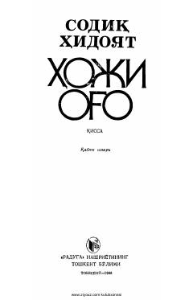

HOEron jamiyatidagi ijtimoiy illatlarni fosh etuvchi o'tkir hajviy qissa.
Eron yozuvchisi Sodiq Hidoyatning ushbu qissasi o'sha davr Eron jamiyatidagi ijtimoiy adolatsizlik, diniy qoloqlik va razolatni o'tkir hajv ostiga oladi. Asar bosh qahramon Hoji og'o obrazi orqali jamiyatdagi tub illatlarni fosh etadi.